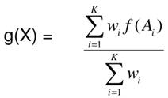
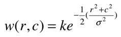
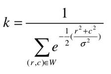
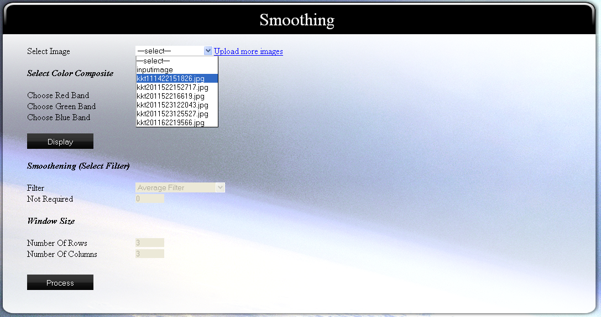
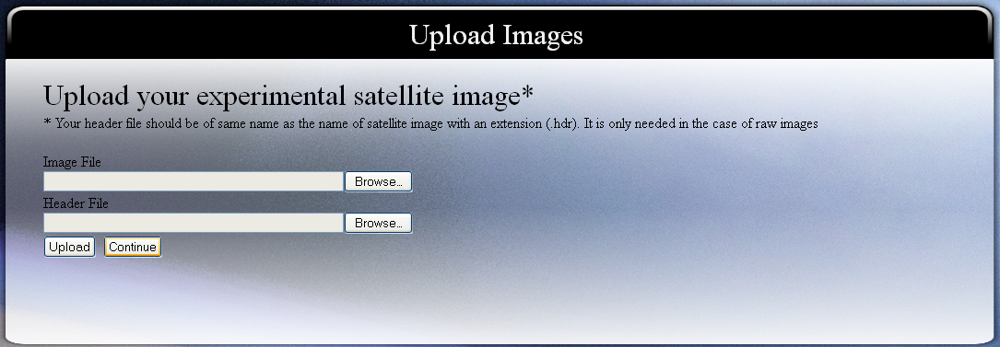
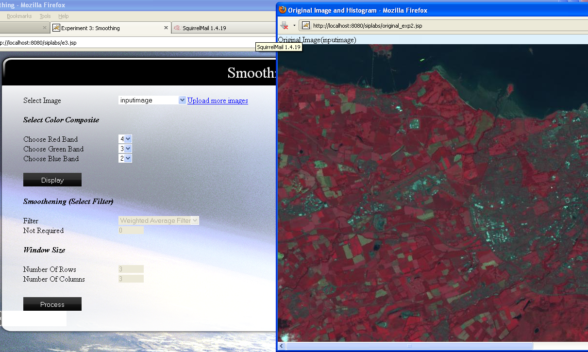
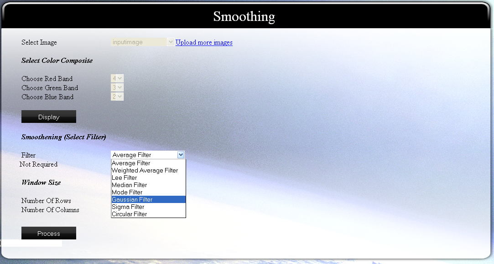
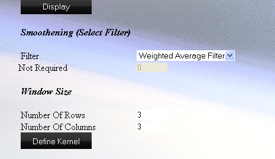
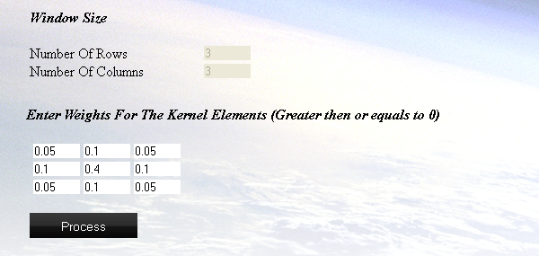

To smoothen the input raw satellite image or image with general formats using various smoothing filters such as Average filter, Weighted Average filter, Gaussian Smoothing, etc.

In image processing literature, the weighting averaging operation is referred to as image smoothing. Smoothening is a process by which noise in the image can be reduced. Smoothening depends on the neighborhood pixels and if there is some unwanted peaks or valleys within an uniform region then it is supressed by the smoothening process. By smoothing, it is implied that local differences between pixels are reduced. Drawback of smoothening is that the edge pixels also gets smoothened which is not desirable in some cases.
For better understanding of image smoothing you must go through the recommended video below:
There are several ways through which one can obtain smoothened image. Some of the methods are:
Mean (Simple Averaging)
In simple averaging, the output gray level is the average of the gray levels of all the pixels in the neighborhood. For example,
Simple averaging for a 3x3 neighborhood window:
A B C
D X E
F G H
the gray level at X will be given as:
g(X) = (1/9)[f(A) + f(B) + f(C) + f(D) + f(X) +f(E) + f(F) + f(G) + f(H)
where f(.) is gray level of neighbors
Video For Smoothing Using Averaging
Weighted Averaging

In case different weights are preferred for different neighbors, then we can write
For simple averaging over a 3x3 neighborhood, wi = (1/9), i=1,2,…,9. We can alter, for example, the weights for 4-neighbors and 8-neighbors. In such a case, wi is not a constant for all values of i.
Video For Weighted Averaging
Smoothing Using Lee Filter
Simple Lee filter
k = 1, gij = fij, which denotes no smoothing at all
k = 2, gij = fij + |(fij – fmean)|, which denotes sharpening
For better understanding go through the video for Lee Filtering.
Video For Using Lee Filter
Median Filtering
Median filter is the most commonly used non-linear filter for image smoothing. When the image is corrupted by random salt-and-pepper noise, median operation is very effective in removing the noise, without degrading the input image. It can be expressed as:
gij = median {fi-k,j-l | k,l=-w, …, o, …, w}
In median filtering, the extreme values are pushed to one end of the sequence after sorting, hence ignored when filtered.
Working of Median Filter :
Consider the size of the window around the pixel. Collect all the pixels in the window and sort them in ascending / descending order. Select the gray level after sorting, according to the rank criterion.
Video For Median Filtering
Mode Filtering
It is a non-linear filter. Central pixel is assigned the gray level that occurs most frequently in the neighborhood. It can be expressed as:
gij = mode{fi-k,j-l | k,l=-w, …, o, …, w}
For example, fn = 11 12 14 15 12 16 11 15 15
Here, 12 is replaced by 15, which occurs most frequently in the neighborhood.
Video For Mode Filtering
Gaussian Filtering
Gaussian filter uses the gaussian function to assign weights to the neighborhoods. The weight matrix is given as:

where r and c are row and column of weight matrix respectively and

Video For Gaussian Filtering
Sigma Filtering
When the filtering operation is required to adapt to the local intensity variations then the filter coefficients should vary according to the position in the image. Shift-variant filters can preserve the object boundaries better, while smoothing the image. Sigma filter is one of the shift-variant filter.
Working of Sigma Filter:
Consider neighborhood size, and a constant value c (can be taken as 1 or 2). Find the mean and standard deviation of the pixels within the neighborhood. Find the neighbors of the central pixel whose gray levels are within c*(standard deviation) of the central pixel’s gray level. Compute the average of the pixels meeting the above criterion. Replace the central pixel’s value by the average.
Note: This cannot be replaced by a convolution since the filter response varies for each position in the image.
Video For Sigma Filtering

Step by step Procedure:
These are the general guide lines and steps that should be followed to perform the experiment :
-
Select Image
Select the image on which you want to perform the experiment.

You can also upload your own images by clicking on "upload more images".

-
Choose band combination
As we know that an image can have more than three bands, so we need to specify which bands should be used for display purpose.
-
Click on "Display" button
This will take the parameters you provided and process them. The original image will be shown to you as output:

-
Select the method of smoothing
You can select one of the method of smoothing from the available options and then enter the required parameter.

If you want to use "Weighted Averaging Filter", then you will have to input the kernel values. So click on "Define Kernel".

Then enter the values of kernel elements.
Note: kernel values should be more than or equal to zero and their sum must be equal to 1.

-
Click on the button "Process"
This will give you the smoothened image and histogram after processing as output.

Here we will discuss how to interpret the outputs produced by experiment 2, i.e., Contrast Enhancement. So, please follow the steps as shown below to get the sample output for interpretation.
- Select "inputimage" as your experimental image. "inputimage" is a satellite image having 6 bands stored in BIL format as raw image. It has the dimension 801x1401. Since in our discussion we will cover upto its 4th band, so it is necessary to understand that what the first 4 bands of this image represents. The first four bands are as follows: blue, green, red and infra-red respectively.
- Select band 4 for red band, band 3 for green band and band 2 for blue band. As according to the theory described in theory section of Virtual Lab, we already know that a standard FCC uses infra-red wave band as red display, red wave band as green display and green wave band as blue display. So, the same we are doing here to get the standard FCC of "inputimage".
-
Click on Display button
After the processing you will get an image. This is the standard FCC of "inputimage". You can also save it by right clicking it and then clicking on "save image as". The image will look like:
You will also get histogram for the bands selected for display. The histogram in our case will be:
Histogram for Infra-red Band (displayed as red in fcc):
Here, you can easily notice that most of the pixels are assigned between grey level 10 to 20. Also, another majority of pixels are assigned to gray level 60 to 120. We, will be comparing the histograms of the three bands (green, red and infra-red) used in the example for understanding what we can easily get from image histogram.
Histogram for Red Band (displayed as green in fcc):
Here, it can be noticed that most of the pixels are assigned between gray level 25 to 70 and a wide range of grey level is not used.
Histogram for Green Band (displayed as blue in fcc):
Here, it is almost similar to red band, i.e., most of the pixels are assigned between gray level 30 to 70. Now, as seen from the histogram of the three bands, it can be concluded that the contrast of infra-red band is highest among these three bands. As it has been provided in theory (see video lecture), that for a good contrast a histogram should be well distributed among all the gray levels. Other attributes that we can get from histogram are: mean, median, variance, standard deviation, etc. (see video lecture).
Now, we are going to apply contrast enhancement over "inputimage". To do so, continue your steps in the experiment as:
-
Choose the filter to be used for smoothing. Here we will choose "Average Filter". (It is set by default)
Here, we are going to interpret the results after application of smoothing using simple average filter. A simple average filter considers the pixel values of neighbors of central pixel, sums them and takes their average according to the dimensions of neighborhood window, which we are going to select in the next step.
- Enter "3" as "no. of rows".
- Enter "3" as "no. of columns"
Here, we have selected a 3x3 neighborhood window for averaging. you should always use odd values in defining the neighborhood window as it becomes easier to get the central element.
- Click on "Process" button.
You will get the smoothened image and histogram of each band used for display after smoothing, which will be as follows:
Smoothened image
Histogram after enhancement for red band
Histogram after enhancement for green band
Histogram after enhancement for blue band
After averaging, some of the gray levels are merged together. So, where there were sharp difference in gray level among neighbors, it becomes less. So, the edges (which are formed due to large difference in pixel values of neighborhood pixels and central pixels) becomes blurred. The advantage of smoothing is that shot and pipper noise can be removed to a large extent. Size of neighborhood window greatly effects the output of smoothing.
Interpretation using histograms
As, some of the gray levels are merged in case of smoothing, the convex hull of histogram after smoothing becomes zaggy.
SMOOTHING
The image shown below is original sample image of quickbird.jpg. Please note that edges are the boundaries of objects/features. For example in figure below the boundary of bean shaped feature is called as its edge.
Weighted Average
The figure below is smoothened image using weighted average method. The coefficients used are 0.1 (8 numbers) and 0.2. It is clearly discernible that the image below is blurred when compared to original image shown above. The edges now look less sharp than before smoothening.
Lee filter
A smoothened image using Lee filter is shown below. Blurring of the image can be seen clearly. The edges now look less sharp than before smoothening. Factor (k)= 0.5
Median filter
A smoothened image using Median filter is shown below. Blurring of the image can be seen clearly. The edges now look less sharp than before smoothening
Mode filter
A smoothened image using Mode filter is shown below. Blurring of the image is too high and can be seen clearly. The edges now look less sharp than before smoothening and the feature colors look much darker .
Gaussian filter
A smoothened image using Gaussian filter is shown below. Blurring of the image can be seen clearly. The edges now look less sharp than before smoothening
Sigma filter
A smoothened image using Sigma filter is shown below. Blurring of the image can be seen clearly. The edges now look less sharp than before smoothening. Sigma value used is 1.8 and window size 3x3.
Circular filter
A smoothened image using Circular filter is shown below. Blurring of the image can be seen clearly. The edges now look less sharp than before smoothening.

Books:
[1] Rafael C. Gonzalez, Richard E. Woods and Steven L. Eddins (2004), Digital Image Processing using MATLAB, Pearson Education
[2] J.A. Richards and X. Jia, Remote Sensing Digital Image Analysis, 4th edition, Springer, Berlin, 2006
[3] R. Schowengerdt, Remote Sensing: Models and Methods for Image Processing, 3rd edition, Academic Press, Mass., 2007
[4] J.R. Jensen, Digital Image Processing: A Remote Sensing Perspective, 4th edition, Prentice-Hall, NJ, 2005
[5] P.M. Mather and M. Koch, Computer Analysis of Remotely Sensed Images, John Wiley, NY, 2011
[6] B. Tso and P.M. Mather, Classification Methods for Remotely Sensed Images, 2nd edition, CRC Press, 2009
[7] Tim Morris (2004), Computer Vision and Image Processing, Palgrave Macmillan
[8] Bhabatosh Chanda and Dwijest Dutta Majumder (2002), Digital Image Processing and Analysis
[9] A. K. Jain (1989), Fundamentals of Digital Image Processing. Englewood Cliffs, NJ: Prentice Hall
[10] Raman Maini and Himanshu Aggarwal (2010), A comprehensive review of image enhancement techniques, Journal of computing, Vol. 2, Issue. 3, pno 8-13, 2010